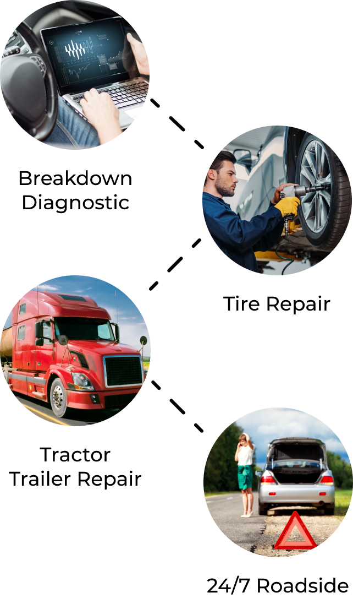
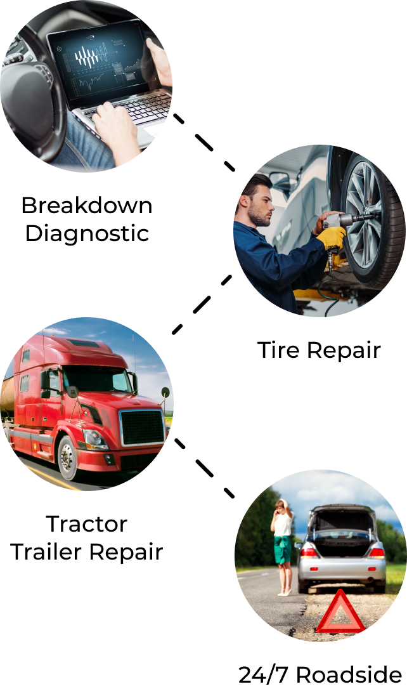
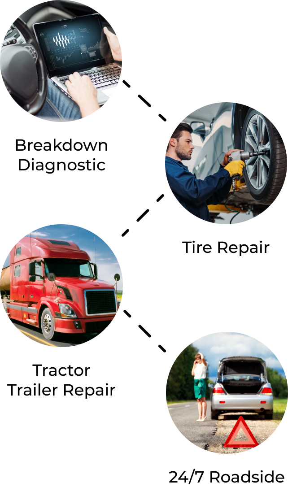

MOBILE TRUCK REPAIR SERVICES
 

Most calls for roadside service are for easily diagnosed repairs like damaged tires or a need for new batteries. Others require sophisticated computer-based diagnostic tools to interface with the truck’s electrical system to determine the nature of the problem.
Fast Fleet offers a complete mobile truck diagnostics service to get the problem hindering your truck identified quickly and repaired efficiently to get the vehicle back on the road. Fast Fleet has invested in computer diagnostics equipment compatible with virtually all truck, engine, and transmission manufacturers to support rapid repairs.
To complete most repairs onsite, Fast Fleet technicians arrive in a fully stocked mobile service truck to diagnose and complete the repair and get the rig back into service.

Immediate Dispatch
We send a local technician immediately out to your location, usually arriving in 90 minutes or less.
No Hidden Fees
Fair pricing that doesn't leave you feeling taken advantage of after your roadside service.
Services for HD to Tractor Trailer
We offer repair and maintenance services on commercial vehicles from Class 2 through Class 8, including diesel pickups, box trucks, refrigeration trucks, semi-trucks and trailers, and more.
Roadside Repair
No matter the issue, we work with you directly to get your roadside repair done as fast as possible.